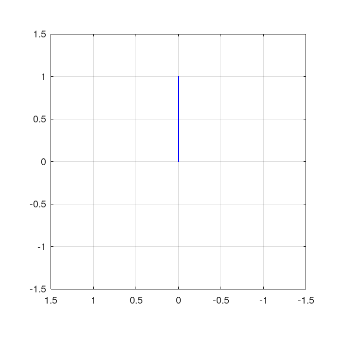
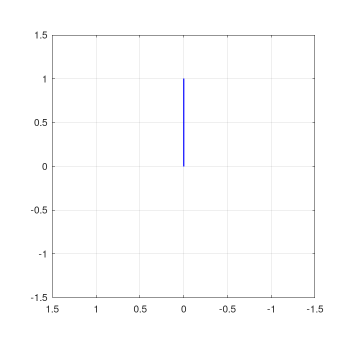
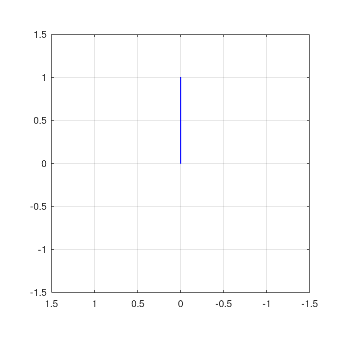
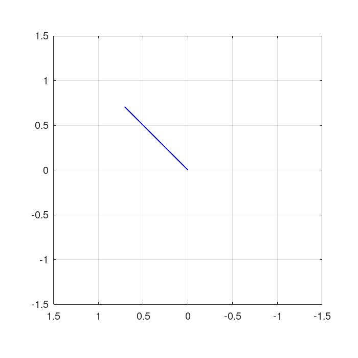
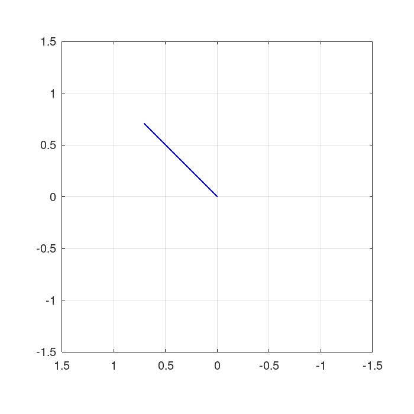

Der Quadratur-Demodulator "dreht" das Koordinatensystem mit konstanter Drehzahl (=Frequenz) und liefert an seinem Ausgang 2 Signale, die x- und y-Koordinate der Zeigerspitze. Diese werden I- und Q-Komponente genannt.
AM:

FM:

Bei der BPSK fährt die Zeigerspitze nur 2 verschiedene Positionen an.

Bei der QPSK sind es 4 verschiedene Positionen. Die Anzahl lässt sich nahezu beliebig steigern (1024 oder sogar 4096 Positionen bei modernen drahtgebundenen Systemen wie DOCSIS oder VDSL).
 
